Planning phase
Questions
How to use UML and Pseudocode?
Can I learn it?
Objectives
We will give an overview of UML diagrams
learn when to use
learn basic notations
(Test with graphical interface)
(Test with the script based plantUML)
We will see some examples of Pseudocode
Instructor note
Lecture + Discussions 45 min
Perhaps OK length
The planning steps
get an overview of the project/program.
help planning writing the code
identify parts needed
Lifecycle steps, example
Plan/initiate
Gather requirements
Design
or
Analysis
to state the problem and define inputs and outputs
graphical tools like UML
Design
to find out the specific algorithms needed
pseudocode
Analysis step
UML Diagrams
Flowchart
Object-orientation programming
Identify objects
Functional programming
Identify functions
Text can also work here, describing the problem as a whole
Design step
Pseudocode
Object-orientation programming
Identify classes that objects can belong to
UML
Functional programming
Identify algorithms
Unified Modeling Language
UML is not a programming language. It’s a graphical notation for drawing diagrams to visualize object oriented systems.
UML includes over a dozen different types of structural and behavioral diagrams.
UML has been marketed for many contexts.
Some problems (Wikipedia):
It has been treated, at times, as a design silver bullet, which leads to problems.
UML misuse includes overuse (designing every part of the system with it, which is unnecessary) and assuming that novices can design with it.
It is considered a large language, with many constructs. Some people feel that UML’s size hinders learning (and therefore, using) it.
“These diagrams should be a quick, useful communication tool. A support system for your brain, not the other way around!”
First iteration in planning can be paper or whiteboard Then there are benefits with digital tools
Design
A way to visualize a system’s architectural blueprints in a diagram, including elements such as:
any activities (jobs);
individual components of the system;
and how they can interact with other software components;
how the system will run;
how entities interact with others (components and interfaces);
external user interface.
Although originally intended for object-oriented design documentation, UML has been extended to a larger set of design documentation,and been found useful in many contexts.
Building blocks
Things
Structural
Class
Interface
collaboration
use case
component
node
Behavioral (dynamic)
interaction
state machine
Grouping
packaging
Annotational
Note
Relationships
Dependency
association
generalization
realization
Diagrams
Structure
Class
Component
Object
Composite structure
Package
Deployment
Behavior
Use case
Activity
State machine
Interaction within/outside system
Sequence
Communication
Timing
Interaction overview
Class
A diagram that shows the system classes and relationships between them.
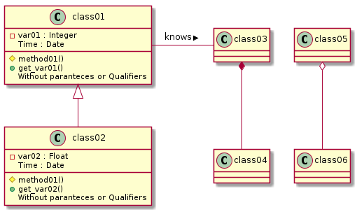
@startuml
node foo
foo --> bar : normal
foo --> bar1 #line:red;line.bold;text:red : red bold
foo --> bar2 #green;line.dashed;text:green : green dashed
foo --> bar3 #blue;line.dotted;text:blue : blue dotted
@enduml
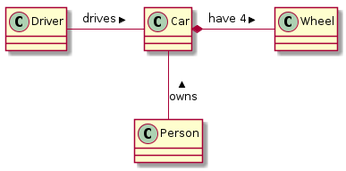
@startuml
class Car
Driver - Car : drives >
Car *- Wheel : have 4 >
Car -- Person : < owns
@enduml
Sequence
A diagram that shows the existence of Objects over time, and the Messages that pass between those Objects over time to carry out some behavior.
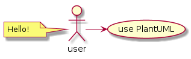
@startuml
user -> (use PlantUML)
note left of user
Hello!
end note
@enduml
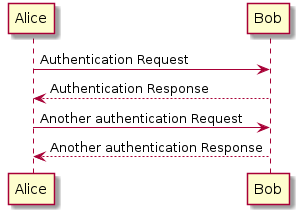
@startuml
Alice -> Bob: Authentication Request
Bob --> Alice: Authentication Response
Alice -> Bob: Another authentication Request
Alice <-- Bob: Another authentication Response
@enduml
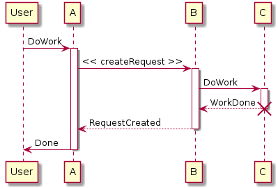
@startuml
participant User
User -> A: DoWork
activate A
A -> B: << createRequest >>
activate B
B -> C: DoWork
activate C
C --> B: WorkDone
destroy C
B --> A: RequestCreated
deactivate B
A -> User: Done
deactivate A
@enduml
Activity
A flowchart that shows the process and its correlating decisions, including an algorithm or a business process.
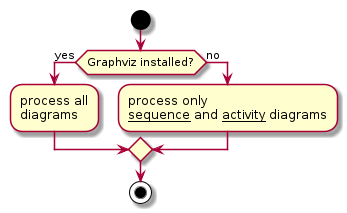
@startuml
start
if (Graphviz installed?) then (yes)
:process all\ndiagrams;
else (no)
:process only
__sequence__ and __activity__ diagrams;
endif
stop
@enduml
Syntax for algorithm flowchart
Start and stop
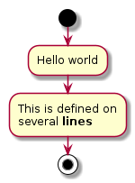
Computation
Input output
Choice
Direction of program flow Iterarative or counting llop
Other
Use case
A diagram that shows relations between Actors and Use Cases.
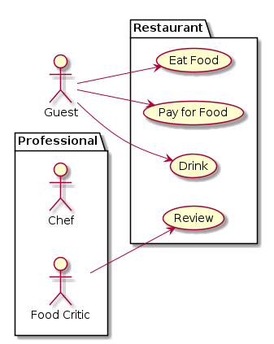
@startuml
left to right direction
actor Guest as g
package Professional {
actor Chef as c
actor "Food Critic" as fc
}
package Restaurant {
usecase "Eat Food" as UC1
usecase "Pay for Food" as UC2
usecase "Drink" as UC3
usecase "Review" as UC4
}
fc --> UC4
g --> UC1
g --> UC2
g --> UC3
@enduml
Object
Object diagrams are derived from class diagrams so object diagrams are dependent upon class diagrams.
Object diagrams represent an instance of a class diagram. The basic concepts are similar for class diagrams and object diagrams. Object diagrams also represent the static view of a system but this static view is a snapshot of the system at a particular moment.
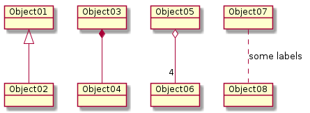
Component
A diagram that shows relations between various Components and Interfaces.
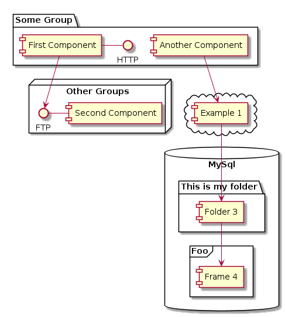
Deployment
A diagram that shows relations between various Processors.
Deployment diagrams are used to visualize the topology of the physical components of a system, where the software components are deployed.
Deployment diagrams are used to describe the static deployment view of a system. Deployment diagrams consist of nodes and their relationships.
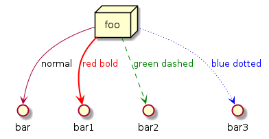
@startuml
node foo
foo --> bar : normal
foo --> bar1 #line:red;line.bold;text:red : red bold
foo --> bar2 #green;line.dashed;text:green : green dashed
foo --> bar3 #blue;line.dotted;text:blue : blue dotted
@enduml
State
A diagram that shows States of a system or subsystem, Transitions between States, and the Events that cause the Transitions.
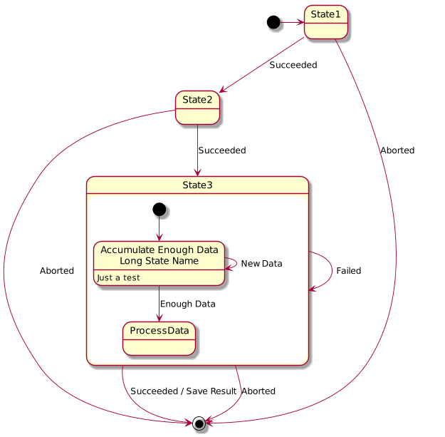
Timing
show timing constraints of a system in a given time frame
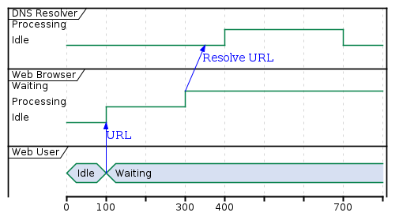
Tools
https://en.wikipedia.org/wiki/List_of_Unified_Modeling_Language_tools
Modeling
Code generation
Reverse engineering
Analyze code complexity
Other metrics
PlantUML
Open-source
Can be integrated with IDE:s, Java documentation, Word
Scripts rather than drawing tools
PlantUML
PlantUML is an open-source tool allowing users to create diagrams from a plain text language.
uses Graphviz software to lay out its diagrams
More info and examples at https://plantuml.com/
Syntax
https://plantuml.com/
Test yourself!
Look at the source files of this material.
Pseudocode
Pseudocode generally does not obey the syntax rules of any particular language
there is no systematic standard form.
Some writers borrow style and syntax from control structures from some conventional programming language, although this is discouraged.
Some syntax sources include Fortran, Pascal, BASIC, C, C++, Java, Lisp, and ALGOL.
Variable declarations are typically omitted.
Function calls and blocks of code, such as code contained within a loop, are often replaced by a one-line natural language sentence.
Depending on the writer, pseudocode may therefore vary widely in style,
from a near-exact imitation of a real programming language at one extreme
to a description approaching formatted prose at the other.
Mathematical style pseudocode
Used in numerical computation
Common mathematical symbols
Type of operation |
Symbol |
Example |
|---|---|---|
Assignment |
← or := |
c ← 2πr, c := 2πr |
Comparison |
=, ≠, <, >, ≤, ≥ |
|
Arithmetic |
+, −, ×, /, mod |
|
Floor/ceiling |
⌊, ⌋, ⌈, ⌉ |
a ← ⌊b⌋ + ⌈c⌉ |
Logical |
and, or |
|
Sums, products |
Σ Π |
h ← Σa∈A 1/a |
Examples
1
If student’s grade is greater than or equal to 60
Print "passed"
else
Print "failed"
2
Initialize total to zero
Initialize counter to zero
Input the first grade
while the user has not as yet entered the sentinel
add this grade into the running total
add one to the grade counter
input the next grade (possibly the sentinel)
if the counter is not equal to zero
set the average to the total divided by the counter
print the average
else
print 'no grades were entered'
Discussion
In Breakout-rooms 6-8 people:
What are your impressions about
UML?
pseudocode?
Experiences?
Share in the end 1-3 inputs in HackMD
Summary
Keypoints
UML is good in several conditions
Structural overviews
Planning
Problem solving
Designing phase of programming
The most important diagrams for software development are:
Class
Sequence
Activity
Use case
There are plenty of tools out there
some can produce code directly
some are script-based and well integrated in Markdown tools like Sphinx and HackMD
perfect for sharing
Pseudocode gives a more detailed description what you want the program to do.
Can be highly personal or very language-like